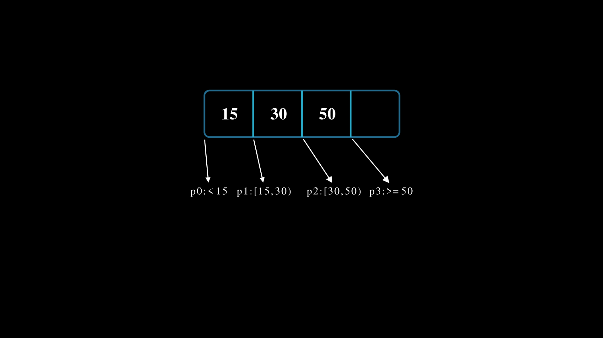

B-дерево: индексирование на диске
B-дерево: индексирование на диске
LSM оптимизировано под запись: чтение может пройти по нескольким SSTable, Bloom-фильтры помогают отсеять часть, но не гарантируют одного обращения. Когда нужна предсказуемая выборка по ключу, на диске лежит B-дерево — PostgreSQL, MySQL, Oracle, SQLite.
Главная идея: B-дерево хранит изменяемые страницы, а не поток иммутабельных файлов. Чтение всегда спускается по короткому пути от корня к листу — фиксированное число страниц, независимо от объёма данных и истории записей. Платим за это записью: чтобы поменять один ключ, база проходит путь от корня к листу, правит нужную страницу и пишет её обратно.
Структура и коэффициент ветвления
Коэффициент ветвления B — максимальное число потомков внутреннего узла; сам узел хранит до B-1 ключей и B ссылок. Один узел = одна страница = одно дисковое обращение. Листы лежат на одной глубине, внутренний узел заполнен не меньше чем на половину.
B подбирают под размер страницы и размер одной внутренней записи: чем больше ключей влезает на страницу, тем шире узел. На типичной странице в 8 KB внутренняя запись весит 24-32 байта, поэтому на одну страницу помещаются сотни ключей — и B выходит в сотни. Дерево остаётся мелким даже на миллиардах ключей:
\[ \log_{500}(10^9) \approx 3{-}4 \text{ обращения к диску} \]
На практике диск трогается ещё реже. У базы есть буферный пул — кеш страниц в RAM. Корень и верхние уровни дерева занимают единицы мегабайт даже на миллиардах ключей, поэтому почти всегда остаются в памяти. Реальное чтение по индексу делает 0–1 физическое обращение к диску: верхушка дерева — из RAM, на диск уходит только за листом. Это и есть ответ, почему B-дерево даёт стабильный p99 там, где LSM плавает.

B = 4.Вставка и балансировка
Это место, где I/O дорожает. Пример роста дерева при максимуме 3 ключей на узел и вставке 8, 21, 34, 55, 63, 77, 84, 96:
Когда целевой лист ещё не заполнен, база читает путь и переписывает одну страницу. Когда лист переполнен — срабатывает split:
- узел делится на два, медианный ключ поднимается в родителя;
- если родитель тоже переполнен, split распространяется вверх, вплоть до корня;
- корень может вырасти, и тогда высота дерева увеличивается на единицу.
I/O одной такой вставки: прочитать путь от корня, записать переполненную страницу, записать новую страницу и обновить родителя. В редком случае — все страницы до корня. Именно поэтому B-дерево проигрывает LSM на записи: случайный I/O по нескольким страницам вместо последовательного append. Но это локальная реорганизация пути, а не пересборка индекса.
Сложность операций
Все оценки — в числе дисковых обращений, n — число ключей, R — размер результата диапазонного запроса.
| Операция | I/O | Комментарий |
|---|---|---|
| Поиск / обновление | \(O(\log_B n)\) | спуск по дереву; обновление пишет одну страницу |
| Вставка | \(O(\log_B n)\) | плюс возможные splits вверх по пути |
| Удаление | \(O(\log_B n)\) | при недозаполнении — слияние или перераспределение |
| Диапазон | \(O(\log_B n + R/B)\) | спуск к левой границе, затем последовательный скан листьев |
Для архитектуры важно удерживать две цифры: глубина дерева — единицы (3-4), а каждая запись стоит нескольких случайных страниц, и эта цена растёт при splits.